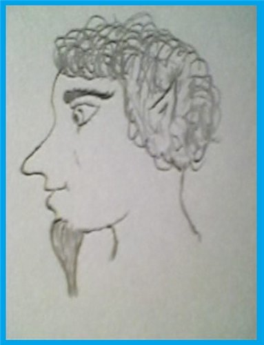
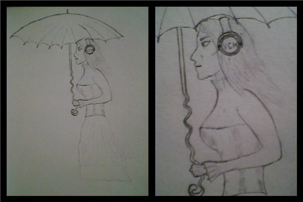

Владыки бывают разные
От автора
Текст не рекомендован к прочтению детям младше девятисот лет.
Данное произведение хранит в себе пошлость, стёб и философский подтекст (в произвольном порядке), также при его написании местами использованы приёмы инверсии (подробнее в книгах П.С. Таранова), завуалированные матерные загибы (сами найдёте) и просто смысловые изощрения — потому если что и покажется малопонятным и не логичным, знайте — таков Авторский Замысел. И вообще, ознакомление с текстом привнесёт в ваше сознание Адъ и Израиль (без Гоморритянских декораций, уж извиняйте), потому читать на свой страх и риск.
P.S. и да, некоторые опечатки также допущены умышленно — для более точного передания атмосферы повествования.
Дамы и господа,
Сегодня (как и всегда)
На нашем манеже Люди
С их номером «Ерунда»!
Сегодня (как и всегда)
На нашем манеже Люди
С их номером «Ерунда»!
Мужчина шагнул в полутёмный зал и окинул весёлым взглядом четыре сокрытых во мраке дальнего угла кресла. Улыбнувшись прикоснулся кончиком пальца к пюпитру, в следующий миг увенчавшемуся пергаментным свитком, извлёк из нагрудного кармана пиджака стило и кольнул своё запястье выступающей из обратной стороны писчего устройства иглой, позволяя своей крови перетекать в крохотный резервуар:
- Что ж, время для шутки…
Маленький Храбрый Хоббит
Сегодня у Маленького Храброго Хоббита был день рождения… Впрочем, будучи с раннего детства малопослушным и свободолюбивым, он редко следовал традициям и правилам… Вот и сейчас, вместо приготовлений к празднику, он направился к реке…
Расположившись в развилке ветвей старой ивы Маленький Хоббит залюбовался блеском солнечных лучей в брызгах воды, покачивающимися на ветру листочками, зависшей над поверхностью реки радугой… Как вдруг идиллическая картина оказалась...изменена новым действующим лицом — из воды на застрявший неподалёку от берега валун выбралась обнажённая человеческая женщина. Маленький Хоббит залюбовался длинной её волос, изгибами тела — даже голубоватый оттенок кожи его не смутил. Женщина хлопнула по тёплому камню когтистой ладонью устраиваясь поудобнее…
- Ну, человечка. Ну, мёртвая немножко. Зато красивая… - возбуждённо прошептал Маленький Хоббит подаваясь вперёд и рискуя свалиться с ветки — лишь бы рассмотреть русалку получше. - И вообще, глаза боятся, а руки делают, - и Маленький Храбрый Хоббит отважно принялся себя поглаживать любуясь как женщина выбирает из своих волос ленты водорослей. - Ну же, русалочка, ну повернись, покажи сисечки…
...но его идеям не суждено было сбыться — потревоженная его громким вздохом русалка завертела головой и даже посмотрела вверх… Явив взгляду Маленького Храброго Хоббита свой отвалившийся нос, распухшие от гнилости губы и слепые буркала глаз.
- Тьфу ты! - скривился Маленький Храбрый Хоббит, попав плевком точно в приоткрытый рот русалки. Женщина злобно заверещала оскалив ряды загнутых внутрь игл-зубов, завращала башкой вытаращив свои буркала...после чего обиженно скрежетнула когтями по камню и бултыхнулась в реку подняв облако ила…
...что до Маленького Хоббита, то он, пребывая в задумчивости, даже не заметил как спустился с дерева и дошёл до дома — придя в себя лишь на пороге, сжимая пальцами дверную ручку. Что ж, у него накопилось несколько вопросов, нуждающихся в объяснении.
- Пап, мам!
- Добрый вечер, сын. - Отец отложил книгу, мать на мгновение прервала шинковку овощей. - Ты хочешь о чём-то спросить?
- Да. Почему я...такой?
- Какой?
- Ну… Вот, ни одну женщину мимо себя пропустить не в состоянии…
- Сынок, это переходный возраст, гормоны…
- Нет же! Мы с вами здорово отличаемся: вот, например, вы не носите носок и обуви, а я и без штанов обхожусь…
Родители-хоббиты переглянулись между собой, вздохнув кивнули друг другу и отец повернулся к сыну:
- Видимо, сынок, пришло время сказать тебе правду. Ты не наш родной сын — мы тебя усыновили. На самом деле ты не хоббит, а сатир!
- Ну ни хрена ж себе встретил тридцатилетие! - Удивлённо выдохнул Маленький Храбрый…Не-Хоббит…

...проходят годы. В сумерках планет,
Что в космосе зовутся серой пылью,
Песчинка прочертила силуэт
Фантазии, что вскоре стала былью…
Что в космосе зовутся серой пылью,
Песчинка прочертила силуэт
Фантазии, что вскоре стала былью…
Тени змеями заструились по полу к мужчине. Четыре пары глаз воззрились на него из тёмной части зала.
- ...ты думаешь, это весело? - Раздался низкий мужской голос со стороны кресел.
- Я уверен, что это...имело место быть, - улыбнулся мужчина и размял пальцы. Тени кошкой потёрлись о его ноги.
- Смертные — такие смертные. - Властный голос пожилой женщины излучал улыбку и снисходительность.
- ...как и все прочие. - Мужчина подкрутил свиток передвигая пергамент и снова взялся за стило...
Смелая Предусмотрительная Девочка
Вечерний осенний парк озарился тусклым сиянием — нет, это не был последний луч заходящего дневного светила, просто в парк зашла красивая девушка. Почти беззвучно переступая по шуршащей листве высокими армейскими ботинками она прошествовала к скамейке, сняла с плеч обладающий формой гроба кожаный рюкзак, поправила длинное пышное платье и элегантно уселась на ещё хранящую солнечное тепло древесину. Девушка извлекла из рюкзака бумажную книгу в твёрдом переплёте и углубилась в чтение…
...раздавшееся с противоположной стороны аллеи шуршание заставило девушку оторваться от книги и оглядеться. Напротив неё почти спрятавшись за деревом расположился...особь мужского пола, который глядя на девушку совершал, судя по вздрагивающим плечам, некие однотипные действия ручного труда. Девушка вздохнула, поправила выбившийся от ветерка локон и вернулась к чтению…
...которое оказалось безцеремонно прервано — обнаруживший, что его, хоть и заметили, игнорируют, субъект прекратил свои кривляния и приблизился к девушке:
- Девушка, а что это такое объёмное у Вас в рюкзачке? Тяжёленькое… - мужской голос, приправленный омерзительными нотками, растерзал очарование вечерней атмосферы. Смелая Предусмотрительная Девочка молча закрыла книгу и убрала её в рюкзак...впрочем, не став его закрывать. Она медленно встала, красуясь поправила корсет и позволила себе приподнять уголки губ заметив с каким вожделением стоящее перед ней создание наблюдает колыхание обтянутых тонкой тканью грудей.
- Тебе от меня что-то нужно? - прозвучал мелодичный девичий голосок. Создание издало шумный глотательный звук и кивнуло.
- Давай я покажу тебе ногу, а ты оставишь меня в покое? - ещё один кивок. - Правую? Или левую?..
Девушка поставила ножку на скамейку и, расположившись боком к зрителю, начала медленно приподнимать подол платья. Вот взгляду предстал верх ботинка, вот уже видна просвечивающая сквозь полупрозрачный материал узорного чулка нежная кожа. Вот приподнятый подол обнажает изящную коленку...и в следующий миг извлечённый из набедренного чехла уверенной девичьей рукой электрошокер с треском устремляется навстречу промежности зрителя…
...девушка вернула электрошокер в чехол, оправила платье, окинула презрительным взглядом стоящее перед ней на коленях и скулящее от боли создание и извлекла из рюкзачка массивный пистолет «Desert Eagle mark XIX .50 AE (Israel)». Ласково погладила пальчиками свою любимую игрушку, проворчала:
- Что тяжёлого, что объёмного… Всего-то пара килограмм… - после чего обернула рукоять пистолета салфеткой и ударом по затылку оглушила неудачника. Влажной салфеткой протёрла скамейку от своих следов, после чего выбросила оба бумажных комочка в ближайшую мусорную урну. Убрала пистолет в рюкзак, брезгливо отошла от сочащейся из-под оглушённого создания дурно пахнущей жидкости и поднесла к уху трубку мобильного телефона.
- Да, я. Майор ...ина. Направь ребят в парк — тут подозреваемый без сознания. Медиков? Ну, можно и медиков, хотя помогут вряд ли — зафиксировано повреждение мыслительного ганглия электричеством…
Смелая Предусмотрительная Девочка с сожалением оглядела парк, одела на плечи лямки рюкзака и направилась домой — по вине одного идиота вечер оказался безнадёжно испорчен...

...прошли века. Электрофонари
На улицах сменили звёзд мерцанье.
Богаче стали, духом обнищав,
«Венцы природы» и «богов созданья»…
На улицах сменили звёзд мерцанье.
Богаче стали, духом обнищав,
«Венцы природы» и «богов созданья»…
...тени хлопаньем совиных крыльев оградили мужчину со спины. Он спрятал стило в футляр и убрал в карман. Сыпанул на пергамент горсть чистого белого песка — чтоб через несколько мгновений сдуть его. В последний раз окинул взглядом написанное и, свернув свиток, поднял глаза на сидящих во мраке зала:
- Вот и всё. Истории написаны, роли розданы… И шутка состоялась.
- У тебя странное чувство юмора… - Сильный голос бодрого старика был ему ответом.
- Странное. Но забавное. - Голос девушки согласно прощебетал.
Мужчина улыбнулся — вежливо, гордо, почти снисходительно:
- ...и потому — пора. Мне. Но не вам.
- Ты прав, - тихо прошелестел со стороны кресел четырёхголосый хор, и мерцание глаз угасло...
Смотреть на них — такая ерунда:
Живёт? Скорее, доживает это племя;
Но вам, друзья, отвечу без труда -
Усните, господа, ещё не время!…
Живёт? Скорее, доживает это племя;
Но вам, друзья, отвечу без труда -
Усните, господа, ещё не время!…
...вновь усмехнувшись я отвернулся от спящих Всадников. Замер ощутив тяжесть на своём плече...и нежно почесал под подбородком ластящуюся ко мне чёрную, сотканную из теней Драконью голову.
- Ну как, моя маленькая Тьма? Ты довольна? - после этих слов я накрыл ладонью ревниво ткнувшуюся мне во второе плечо голову Дракона сияющего...скромно и почти незаметно.
- Тебе удалось...убедить - Их. - Шипящий дуэт голосов, вежливая улыбка в интонации.
- Разумеется, - ласково поглаживаю головы своих Драконов. - Ведь я — Повелитель Слов…


Автор: Сальфарио.
(специально для vampirecommunity.ru)
[Наверх]